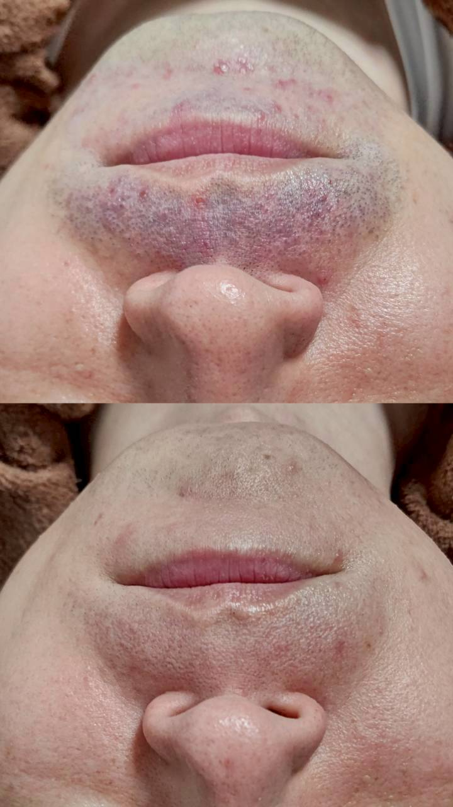

光脱毛のしくみをやさしく解説。なぜ毛が生えにくくなるのか

「そもそも光を当てるだけで、どうして毛が生えにくくなるのですか」というご質問を、初めてご来店される方からよくいただきます。今回はそのしくみを簡単にご説明します。
光脱毛で使用する光は、毛に含まれる黒い色素(メラニン)に反応する性質があります。光が毛根周辺に熱として伝わることで、毛を作り出す組織に働きかけ、次に生えてくる毛が細く、目立ちにくくなっていきます。
毛には生えるサイクル(毛周期)があり、光は主に成長期にある毛に反応しやすいため、1回の施術ですべての毛に効果が出るわけではありません。何度か施術を重ねることで、少しずつ毛量や毛の太さの変化を感じていただけるようになります。
効果の感じ方や必要な回数には個人差があります。ご自身の毛質でどのくらいの変化が見込めるか気になる方は、無料カウンセリングと無料パッチテストでご相談ください。